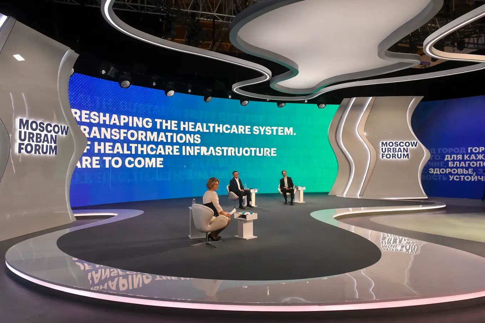

Светодиодный экран
Видеостена для пресс-центра — профессиональное решение на базе LCD-панелей или светодиодных модулей (LED). LCD-варианты обеспечивают высокую детализацию изображения при статичном контенте, LED-конструкции отличаются повышенной яркостью и бесшовностью даже на больших площадях. Встроенный контроллер позволяет гибко управлять мультимедийным контентом в реальном времени.
Выбрать формат